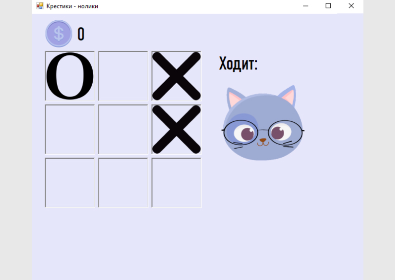
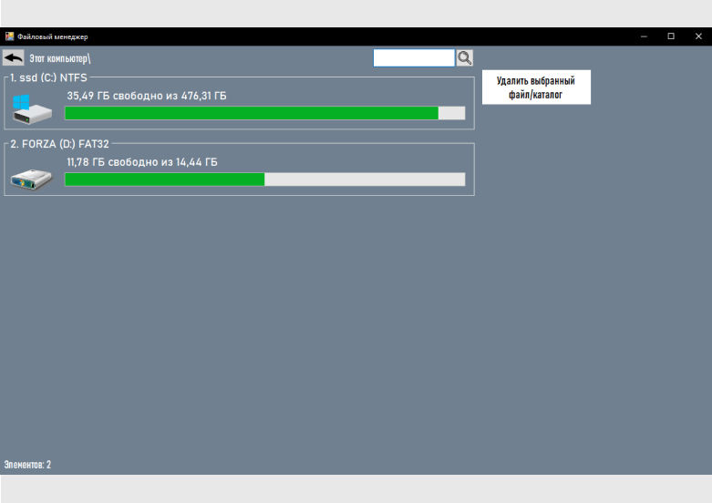
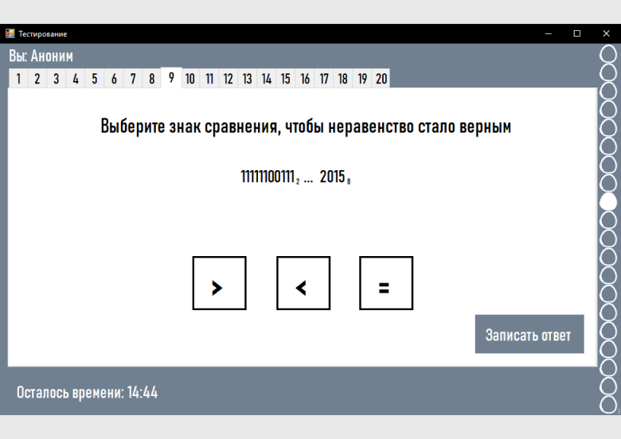

Десктопное игровое-обучающее приложение, разработанное во время учебной практики. Идея игры: существует своя игровая валюта — монетки. Чтобы их заработать, необходимо выиграть Кота-ученого в мини-игре «Крестики-нолики». За эти монетки есть возможность открыть тест и пройти его. Каждый тест — это уровень.
Среда разработки: Visual Studio (WindowsForm)
Язык программирования: C#

Десктопное приложение, разработанное в качестве итоговой работы по дисциплине «Операционные системы». Предоставляет возможность открыть логический диск, подключенный к ПК, перемещаться по папкам, удалять файлы, осуществлять поиск по Search бару.
Среда разработки: Visual Studio (WindowsForm)
Язык программирования: C#

Десктопная тестирующая программа, разработанная в качестве продукта курсовой работы по дисциплине «Основы алгоритмизации и программирования». Помогает обучающемуся подготовиться к экзамену по информатеке по теме «Сравнение чисел в различных системах счисления».
Среда разработки: Visual Studio (WindowsForm)
Язык программирования: C#
